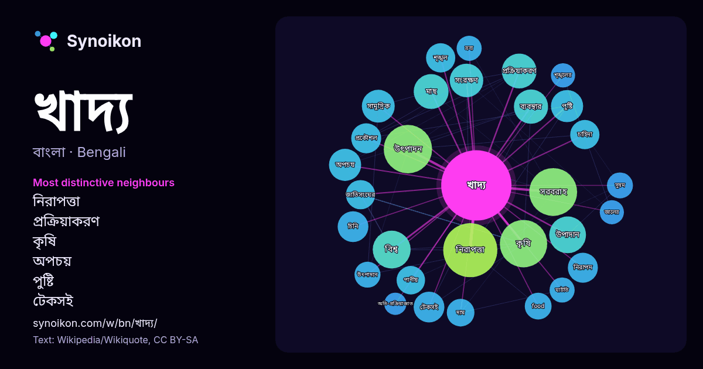

বাংলা · জনপ্রিয় শব্দ
খাদ্য
“food” · উইকিপিডিয়া, Wikiquote থেকে 1676টি প্রয়োগে এর চারপাশে পাওয়া শব্দ।

সবচেয়ে স্বতন্ত্র প্রতিবেশী
- নিরাপত্তা 31×
- প্রক্রিয়াকরণ 23×
- কৃষি 22×
- অপচয় 22×
- পুষ্টি 19×
- টেকসই 18×
- শৃঙ্খল 18×
- সরবরাহ 17×
- চিনি 17×
- উৎপাদন 17×
- food 16×
- সামুদ্রিক 15×
- সুষম 14×
- পানীয় 13×
- সংরক্ষণ 13×
- নিরাপদ 13×
- জাতিসংঘের 13×
- শৃঙ্খলের 13×
- দাম 13×
- মাছ 13×
× = সাধারণ উইকিপিডিয়া টেক্সটের চেয়ে কত গুণ বেশি।
সবচেয়ে ঘন ঘন প্রতিবেশী
- প্রধান 80
- নিরাপত্তা 65
- গ্রহণ 60
- উৎপাদন 52
- সরবরাহ 51
- কৃষি 50
- মানুষের 43
- বিশ্ব 32
- শিল্প 32
- উপাদান 30
- তৈরি 30
- ব্যবস্থা 29
- সকল 29
- সাধারণত 29
- গুরুত্বপূর্ণ 27
- প্রক্রিয়াকরণ 27
- মাছ 27
- মানুষ 27
- সংস্থা 27
- বাংলাদেশ 26
প্রসঙ্গে
- খাদ্য নয়। যেমন, থোড় সেলুলোজ দিয়ে গঠিত হওয়ায় আমাদের পরিপাক নালীতে পাচিত হয় না। ফলে এটি পুষ্টি সহায়ক নয়। সুতরাং সেই সব আহার্য সামগ্রীকেই খাদ্য বলা Wikipedia snippets · খাদ্য
- খাদ্য অপচয়, খাদ্য বর্জ্য বা খাদ্য নষ্টকরণ বলতে অভুক্ত খাদ্যকে বর্জ্য হিসেবে ফেলে দেওয়ার ঘটনাটিকে বোঝানো হয়। খাদ্য ব্যবস্থার সর্বত্র যেমন খাদ্য উৎপাদন Wikipedia snippets · খাদ্য অপচয়
- নিরাপদ খাদ্য নিশ্চিতকরণ বা খাদ্য সুরক্ষা (ইংরেজি: Food safety) বলতে খাদ্যবাহিত অসুস্থতা প্রতিরোধ করার উদ্দেশ্যে খাদ্য ব্যবহার, প্রস্তুতকরণ, প্রক্রিয়াজাতকরণ Wikipedia snippets · নিরাপদ খাদ্য
- খাদ্য নিরাপত্তা (ইংরেজি: Food security) বলতে বোঝায় অবাধ খাদ্য সরবরাহ এবং সারাবছর খাদ্যের পর্যাপ্ত প্রাপ্যতা ও মানুষের খাদ্য ভোগের অধিকার। এক কথায়,খাদ্যের Wikipedia snippets · খাদ্য নিরাপত্তা
- আলোচনা হয় তাকে খাদ্য বিজ্ঞান বলে। এই বিজ্ঞানে নতুন খাদ্যের মানোন্নয়ন করা হয়, এসব খাদ্য প্রক্রিয়াজাতের নকশা প্রণয়ন করা হয়, খাদ্যের মোড়ক নির্বাচন Wikipedia snippets · খাদ্য বিজ্ঞান
- কীটনাশক ব্যবহার করা হয় না। জৈব সার ব্যবহার করে প্রাকৃতিকভাবে উৎপাদিত খাদ্য হল জৈব খাদ্য। আর যেসব পণ্য উৎপাদনে সহনীয় মাত্রায় নির্দিষ্ট সময়ে রাসায়নিক সার Wikipedia snippets · জৈব খাদ্য
- বংশাণুগতভাবে পরিবর্তিত খাদ্য (জিএম খাদ্য) বা বংশাণু প্রকৌশল ব্যবহারে পরিবর্তিত খাদ্য (জিই খাদ্য) হচ্ছে এমন জীব থেকে প্রাপ্ত খাদ্য যার ডিএনএ বংশাণু প্রকৌশল Wikipedia snippets · বংশাণুগতভাবে পরিবর্তিত খাদ্য
- বাংলাদেশ নিরাপদ খাদ্য কর্তৃপক্ষ হচ্ছে নিরাপদ খাদ্য আইন, ২০১৩ (২০১৩ সনের ৪৩ নং আইন) এর অধীনে প্রতিষ্ঠিত একটি স্বায়ত্তশাসিত জাতীয় খাদ্য নিরাপদতা বিষয়ক Wikipedia snippets · বাংলাদেশ নিরাপদ খাদ্য কর্তৃপক্ষ
আরও শব্দ
- অরণ্য
- আয়না
- ইতিহাস
- ঈশ্বর
- কাজ
- কুকুর
- ক্ষমতা
- গান
- গ্রীষ্ম
- ঘড়ি
- ঘণ্টা
- ঘোড়া
- ছায়া
- জননী
- জলবায়ু
- জীবন
- ঝড়
- টাকা
- ট্রেন
- দারুচিনি
- দ্বীপ
- নক্ষত্র
- নীরবতা
- পরিবার
- পানি
- পাহাড়
- প্রকৃতি
- বাগান
- বিজ্ঞান
- বিড়াল
- বৃষ্টি
- ভাষা
- মধু
- মরুভূমি
- মানচিত্র
- মৃত্যু
- রাস্তা
- রুটি
- লবণ
- শরৎ
- শহর
- শিল্প
- শীত
- সত্য
- সময়
- সেতু
- সোনা
- স্বাস্থ্য
- হৃদয়
2026-10-09 তারিখে ডিফল্ট সেটিংসে (±5 শব্দ, মাঝারি কর্পাস) আগে থেকে গণনা করা। ইন্টারঅ্যাক্টিভ মানচিত্র লাইভ ডেটা দিয়ে এটি হালনাগাদ করতে পারে।
যন্ত্রে অনূদিত ইন্টারফেস; সংশোধন স্বাগত।